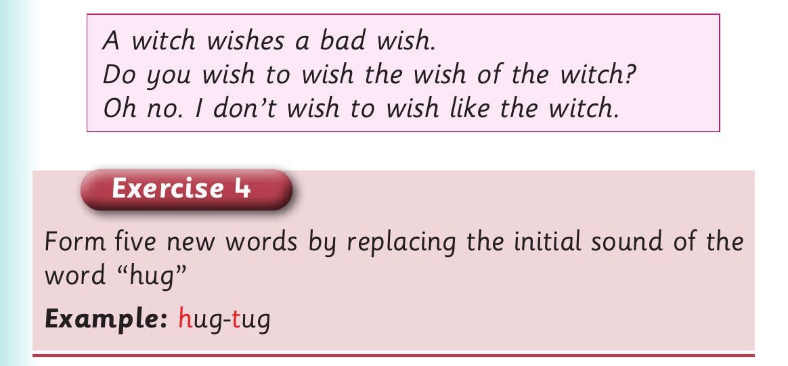

Replacing initial sounds - tongue twister and Exercise 4
5. Read the following tongue twisters fast:

A witch wishes a bad wish. Do you wish to wish the wish of the witch? Oh no. I don’t wish to wish like the witch. Exercise 4 Form five new words by replacing the initial sound of the word “hug” Example: h ug- t ug